Как создавать AI-агентов
Агенты, на которых можно делегировать целые процессы — в бизнесе и личных делах. Разберём, как их создавать и как ставить им задачи.
Это гайд для тебя, если ты уже работаешь с ИИ, но пока не чувствуешь результата в деньгах или свободном времени. Если пользуешься ИИ только как чатом и не умеешь ставить ему задачи.
И если ты уже пробовал собрать агента — тут ты упростишь процесс, сделаешь его пошаговым, а результат предсказуемым.
Мы разберём, как создать AI-агента и как ставить задачи. Почему нет разницы, где ты его собираешь — в Claude Code или Codex. Дам понятные формулы: стоит ли вообще создавать агента, и как писать для него инструкции по системе обратного промптинга.
Сохрани этот конспект и держи под рукой, когда начнёшь собирать своего агента. Погнали.
1. Чем AI-агент отличается от обычного чата
Если ты используешь чат просто для ответов — ты используешь его правильно. Задал вопрос — получил ответ. Всё окей. Но так ты не раскрываешь его полный потенциал.
С агентом всё работает по-другому. Чтобы запомнить, держи формулу — РОСТ.
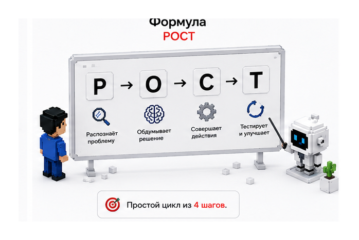
Р — Распознаёт проблему
В большинстве случаев агент сам чётко понимает, в чём проблема. Как врач: ты приходишь, он задаёт вопросы, диагностирует, консультирует. Передаёшь ему исходные данные — он видит проблему и предлагает варианты. Не хватает данных — отправляет «на анализы», и уже по ним ставит диагноз и предлагает решение. ИИ работает так же.
О — Обдумывает решение
Ошибка новичка — думать, что ты должен знать каждый шаг агента и диктовать ему, как решать. Чаще агент лучше знает, как решить твою проблему.
Представь: ты директор завода, тебе нужен маркетолог. Ты же не пишешь ему должностную инструкцию — ты в этом некомпетентен. Ты ставишь задачу: «нужно больше заявок на покупку арматуры». Ставишь конечную цель и описываешь её максимально подробно. Как ставить цель — дальше.
С — Совершает действия
Есть понимание проблемы и план — можно действовать. Агент сам выполняет работу, которую ты делал руками: работает с файлами, почтой, таблицами, сервисами, базой данных и другими инструментами, к которым ты дал доступ. Какие доступы давать, а какие нет — разберём в блоке про безопасность.
Т — Тестирует и улучшает результат
После первых действий агент не останавливается. Вся работа идёт циклично. Он экспериментирует, оценивает результат, делает выводы, пробует и тестирует — пока не достигнет той цели, что ты задал вначале. Использует только те инструменты, к которым ты дал доступ. Оценивает результат и повторяет, пока не достигнет.
В этом главное отличие от чат-бота, где ты просто общаешься и получаешь ответ. Или от бота-автоматизации, который отработал и ждёт тебя. Агент может работать циклично, пока на это не повлияют внешние факторы — ну, свет не вырубят.
2. Как понять, стоит ли создавать агента
Не каждую задачу нужно передавать агенту. У меня лежит целая стопка агентов, которые решили одну задачу и стали не нужны. Чтобы понять, есть ли смысл, запомни правило трёх R.
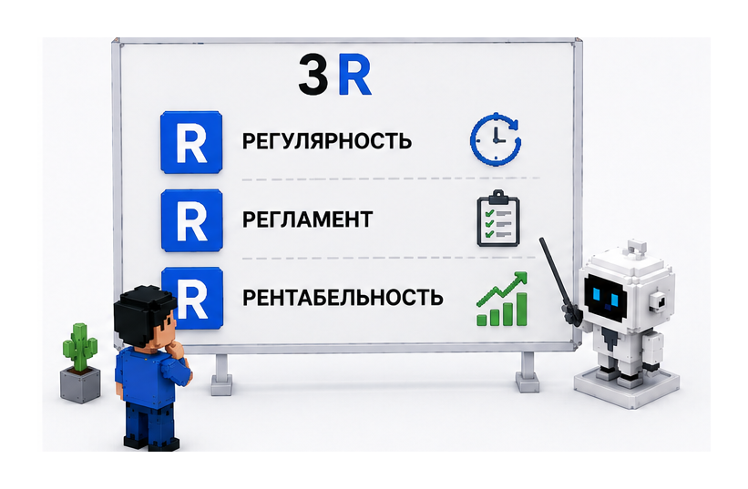
Регулярность
Задача под агента обязательно должна быть повторяемой. Спроси себя: буду ли я повторять её каждый день, каждую неделю? Разбирать входящие письма, собирать отчёты, анализировать заявки, формировать документы. Если делаешь задачу хотя бы 2–3 раза в неделю — её уже можно отдавать агенту.
Регламент
Есть ли у задачи конкретные правила выполнения? Приходят одни и те же типы писем, которые надо сортировать; анализируешь одни и те же видео для контента. Если задача идёт по правилам — её проще передать агенту, особенно если ты можешь эти правила описать.
Рентабельность
Возврат вложенного времени. Посчитай на пальцах: окупится ли время на создание агента тем, что он сэкономит? Задача занимает 2 минуты, а возни с агентом — на две недели? Проще делать руками. Но если каждый день тратишь на задачу час — агент окупится быстро.
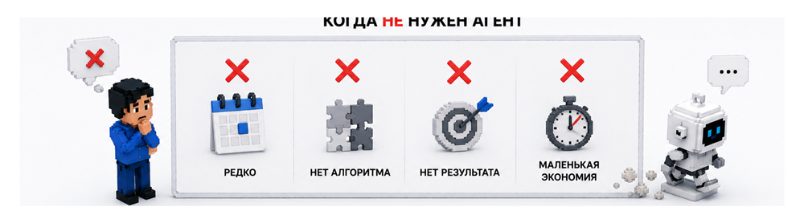
3. Формула создания агента — AGENT
Теперь — как создавать агентов. Разберём на формуле AGENT, чтобы было проще запомнить.
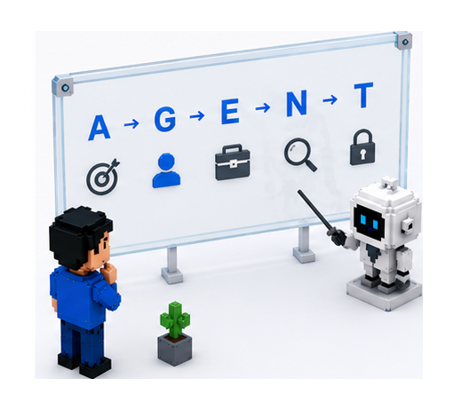
A — Aim: нацелить агента на результат
Первый вопрос перед созданием: что конкретно агент должен сделать. Чётко определи его конечную цель. Не расписывай процесс — сконцентрируйся только на результате.
Представь восхождение в гору. Ты не описываешь каждый шаг — ты определяешь, что должно быть на вершине. Прелесть агентов в том, что путь к вершине они находят сами. Даже теми способами, о которых ты не подозреваешь — у него больше данных, он быстрее анализирует и находит решения за тебя.
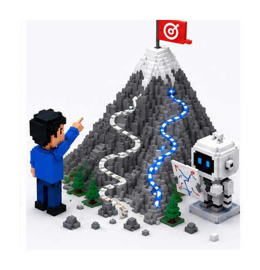
Проще думать об этом как о найме сотрудника. Как директор завода и маркетолог: ты нанимаешь руководителя отдела продаж и говоришь — «подними продажи, сделай что-нибудь», и даёшь вводные.
Важно, чтобы агент понимал, почему ты хочешь этот результат. «Поднять продажи, чтобы зарабатывать больше. Мне важны качественные продажи, крупные клиенты надолго. Хочу, чтобы текучка в отделе исчезла». Когда агент понимает смысл задачи, он сам принимает решения в нестандартных ситуациях, не дёргая тебя по мелочам.
Пример: собираем агента для почты
Самый простой пример — агент для входящих писем. Это база в любом бизнесе. Сформулируем результат: «мне нужно тратить меньше времени на разбор входящих писем». Заметь — мы пока не говорим, как он это сделает. Только желаемый результат.
Дальше сильно поможет критерий готовности — по каким признакам мы поймём, что задача выполнена. Нельзя сказать «разберись с моими письмами» — это слишком размыто. Лучше так:
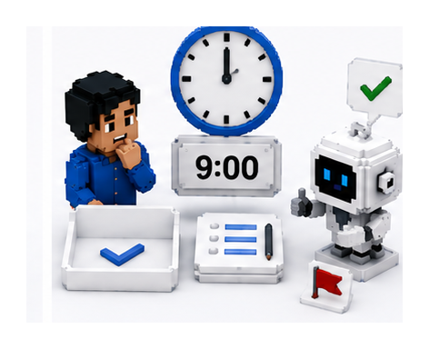
Не можешь сам представить готовый результат — рано отдавать задачу агенту. Всё равно что стрелять из пушки по воробьям.
Обратный промптинг
Есть результат, которого хочешь достичь. Теперь попроси агента задать уточняющие вопросы — это и называется обратным промптингом. Вместо того чтобы предусмотреть все детали заранее, напиши прямо в чат:
Вот результат, который мне нужен: я хочу тратить меньше времени на разбор писем по электронной почте. Задай мне все необходимые вопросы, чтобы понять задачу и составить лучший план действий.
Дальше ИИ сам проводит интервью, собирает недостающее и составляет план. Часто он делает это лучше тебя. По большому счёту от тебя нужно одно — грамотно описать нужный результат. Если можешь объяснить задачу другому человеку — скорее всего, её выполнит и ИИ.
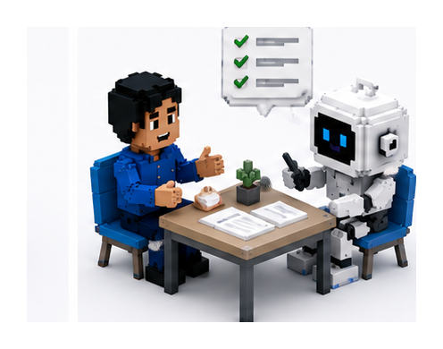
Уже одно понимание этого принципа ставит тебя впереди большинства пользователей ИИ.
G — Give Identity: придать индивидуальность
По умолчанию ИИ знает обо всём понемногу. Но без индивидуальности он не эксперт ни в чём. Твоя задача — дать ему экспертность: определить, кто он и в чём эксперт, конкретно и в узкой области. Чем точнее идентичность — тем лучше он понимает роль, стабильнее решает и качественнее работает.
Когда я строю клиентам агентов для отдела продаж, я наделяю каждого индивидуальностью. В начале пути, когда не делал этого, — конверсия была ужасной, расход большой даже на мощной модели. Как только начали делать для каждого клиента отдельный файл идентичности и обучать агента по его методикам — стало гораздо лучше.
Три файла личности агента
Для агента делаем три текстовых файла: файл принципов, файл идентичности и файл пользователя.
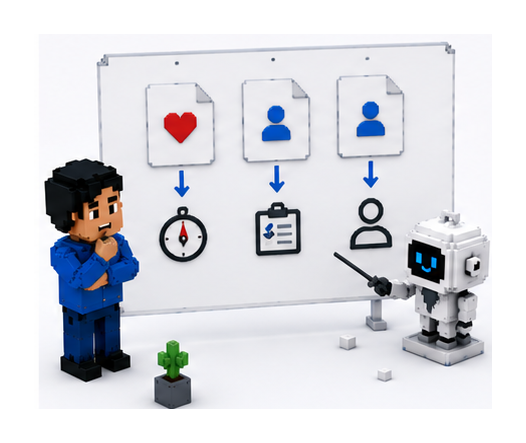
Файл принципов — как агент себя ведёт: особенности характера, ценности, манера общения, стиль письма, способ принятия решений, реакция на неопределённость, допустимый уровень инициативы. Его тоже можно собрать обратным промптингом:
Я хочу создать файл принципов для тебя, который определит твои особенности характера, ценности, манеру общения, стиль письма, способ принятия решений, реакцию на неопределённость и допустимый уровень инициативы. Задай мне необходимые вопросы, которые помогут тебе создать этот файл для меня.
Файл идентичности — узкая специализация агента: имя, должность, роль, основная задача, рабочая область, ограничения, ответственность. Например, одного моего агента зовут Рудик — он анализирует контент и только это. Кидаю ему видео из Instagram, он разбирает по фактам, пишет сценарий, добавляет в таблицу — а я беру оттуда приёмы для своих видео.
Файл пользователя — вся информация о тебе, на кого работает агент: твоя роль, цели, предпочтения, рабочие привычки, компания, команда, ключевые контакты, правила приоритизации. Создаёшь один раз — используешь для разных агентов, которым эта информация нужна. Например, агенту-аналитику контента файл пользователя я не давал — его задача не писать письма от моего имени, а анализировать чужой контент.
Подытожим: принципы — как агент себя ведёт, идентичность — кто он, пользователь — кто ты и на кого он работает.
E — Equip: оснастить агента
Агент знает роль, понимает цель и результат — но у него пока нет инструментов. Как обычному сотруднику нужны компьютер, телефон, стол — так агенту нужны контекст, история, данные, инструкции, доступы, подключения к системам и рабочее расписание.
Представь: языковая модель — сотрудник за столом. На столе — всё для работы: инструкции, процессы, регламенты. Сверху лежат файлы идентичности (кто он в моменте). Над ним — рабочие циклы и расписание. Под столом — база знаний и память агента, где хранится то, что не помещается на текущем столе.
Чистое контекстное окно — это не «ничего не дал», а «дал только то, что нужно для конкретной роли». Поэтому универсального агента создать нельзя — он будет неэффективным. Давай правильный контекст, а не всё подряд.
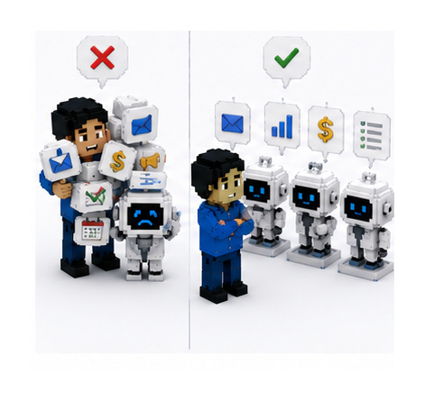
Как зафиксировать свои рабочие процессы
Чтобы агент выполнял работу правильно, опиши процесс максимально точно. Вместо того чтобы вручную придумывать шаги («сюда нажми, эти письма туда, тем не отвечай»), сделай проще.
Способ 1 — запись экрана. Возьми один рабочий день и запиши весь процесс: как открываешь почту, отвечаешь клиентам и партнёрам, куда сортируешь, что удаляешь. Параллельно проговаривай на видео, что делаешь и почему — это главное. Потом закинь запись в чат, чтобы он вытащил контекст.
Это можно сделать и через расширение Claude для Chrome — там есть функция Teach: включаешь её и работаешь во вкладке, а расширение запоминает, куда кликаешь и что пишешь, и выдаёт чёткий промпт со всеми твоими действиями. Его загружаешь в агента или используешь как базу для инструкции.
Способ 2 — обратный инжиниринг. Подключи агента через коннекторы к своей почте и попроси разобрать твои данные:
Подключись к моей почте, прочитай 50 отправленных мной сообщений. Изучи мой стиль письма: приветствия, прощания, длину предложений, фразы, кому я отвечаю, а кому нет. Создай подробную инструкцию, по которой можно писать письма от моего имени.
После такого анализа агент знает, кто ты, как общаешься, какие шаблоны и правила используешь. То есть либо показываешь весь процесс на видео, либо даёшь готовый результат — агент сам анализирует и составляет себе инструкцию. Её важно немного прочитать и поправить руками либо докрутить на тестах.
N — Narrow: сузить область задач
Когда агент уже работает в почте и снимает с тебя эту рутину — хочется накинуть ему ещё задач. Это ошибка. Агент, заточенный под почту, будет делать только почту — мы изначально заложили ему такой результат и такие документы.
Весь принцип — делать агентов максимально узкоспециализированными. Но как тогда автоматизировать большие процессы, весь маркетинг например?
Субагенты и агент-менеджер
Выход есть: создавать субагентов, а одного-двух ставить агентами-менеджерами. Субагент делает свою работу, а главный агент ими управляет: принимает результаты, при недочётах отправляет обратно, оркестрирует.
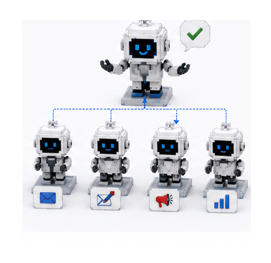
Ты мой агент-менеджер. Твоя задача — управлять моими субагентами, следить за ходом их работы, контролировать выполнение задачи и исправлять ситуации, если что-то пойдёт не так. Ты самостоятельно определяешь, какие агенты необходимы для выполнения поставленной задачи.
Пример: сделал агентов на разные почты — личную, корпоративную, ещё одну. Три агента проверяют почту, а над ними ставишь менеджера. Он контролирует всех, принимает результаты, собирает единый отчёт и присылает его тебе как владельцу.
T — Trust: научиться доверять агенту
Всё выше — это как создавать агента. Теперь надо научиться ему доверять — чтобы не висеть над ним по три часа в день. Наша главная задача — освободить своё время, а не нагрузить себя ещё больше. Довериться и отпустить поводок.
Я сначала даю мелкие задачи. На почте — не отправлять письма, а только готовить черновики. И это нормально. Как только видишь, что агент безошибочно делает 90% работы — можно передавать полную автономность.
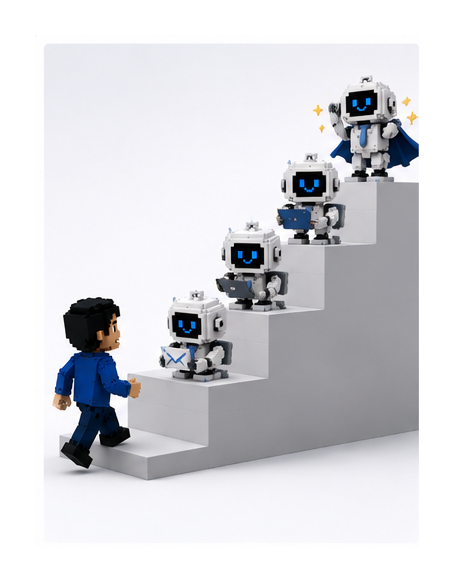
Лестница доверия — 4 этапа:
- Наблюдение. Даёшь безопасную задачу (отсортируй входящие). Он ничего не отправляет, важных решений не принимает. Проверяешь качество — если ок, идёшь дальше.
- Черновики. Генерирует черновики, ты правишь: «этот вариант не нравится, сделай короче», «убери эту фразу, пиши чётче». И просишь его отредактировать файлы принципов/идентичности под эти правки. Устраивает результат — дальше.
- Безопасные действия. Разрешаешь сам выполнять простое: пересылать финансовые письма в финотдел, распределять уведомления по папкам, помечать сообщения. Особенно если ты уже показывал, как это делаешь.
- Полная автономность. Агент полностью управляет почтой, ты в неё даже не заходишь. Как убрать руки с руля и доверить машину водителю.
Как сделать автономность безопасной
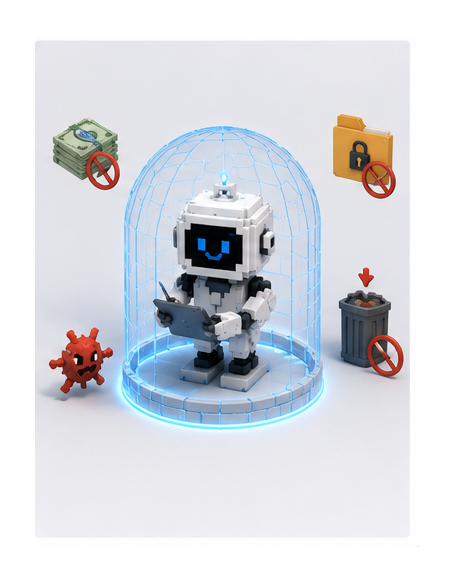
Первое — границы допустимого. В файле идентичности пропиши, что агент имеет право делать от твоего имени: какие письма отправлять, может ли тратить деньги и принимать решения, какие темы требуют твоего одобрения, какие папки не трогать, что удалять, а что нет.
Второе — на старте одобряй каждое действие. Пусть перед началом распишет, что собирается делать. Ты читаешь и одобряешь. Это помогает понять его логику и постепенно ослаблять поводок — как с собакой: сначала короткий поводок, потом длиннее, потом гуляет свободно, но под присмотром.
Третье — когда уже автономно, задай ритм. Проверять почту каждые 15 минут, каждое утро в 9:00, по пятницам делать отчёт. И ты, не отвлекаясь, получаешь готовый результат по расписанию.
4. Главный вывод
Большинство пугаются ИИ, думая, что нужны супертехнические навыки. Я показал то, что реально важно: умение чётко определить результат и последовательность действий, быть открытым, исследовать, пробовать и тестировать.
И это уже не шутки. Агенты получают огромное распространение — они выполняют целые процессы в компании Anthropic (те, кто создал Claude), в отделе маркетинга. Один человек — но сотни AI-агентов. Это новая ветвь эволюции.
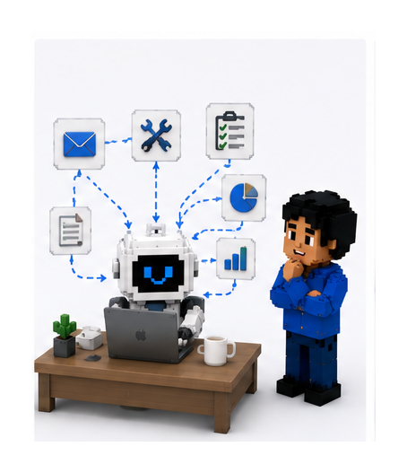
Кто начнёт осваивать это сейчас — будет впереди. Либо ты управляешь агентами, либо оказываешься внутри системы, которой управляют они.
5. С чего начать
Где найти первую задачу для агента? Вернись к правилу 3R. Ищи то, что регулярно повторяется, идёт по понятным правилам, занимает заметное время и ведёт к конкретному результату. И посчитай, окупится ли создание агента.
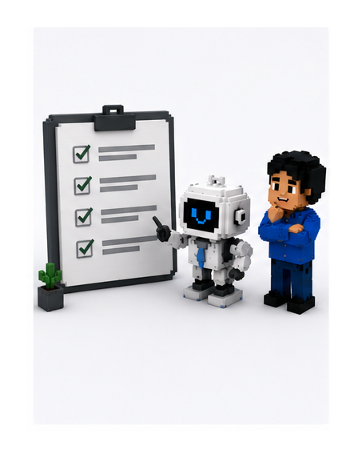
Цель — не создать агента ради агента. Единственная стоящая цель — перестать вручную делать работу, которую система должна делать за тебя.
Больше — в моём телеграм-канале
Переходи в мой телеграм-канал — там я публикую больше практической информации по созданию AI-агентов и по искусственному интеллекту в целом.
Перейти в телеграм-канал → Собери первого — дальше пойдёт само. Увидимся в канале.
Собери первого — дальше пойдёт само. Увидимся в канале.